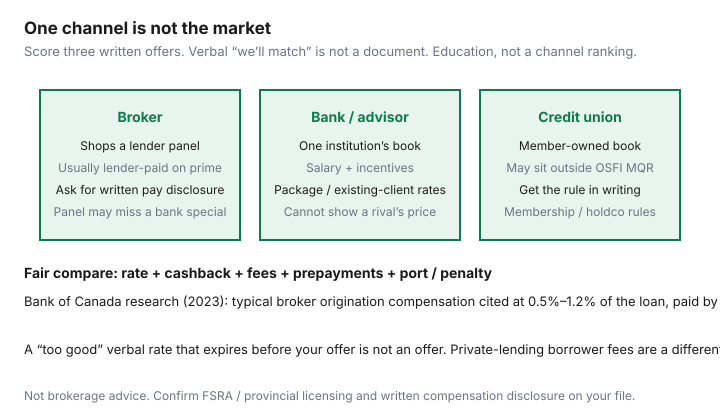

Housing · Canada
Mortgage broker vs bank in Canada: how first-time buyers should compare paths
First-time buyers talk to the bank that already has their chequing account and assume that conversation is the market. It is one shelf. A broker shops a panel. A credit union may use a different rulebook. The shelter-cost move is to run three written offers through the same document package and score them like a renewal — rate, cashback, fees, prepayments — not like a vibe.
Qualification is still the OSFI MQR on a typical federally regulated purchase (greater of contract + 2% or 5.25%, verified 20 Sep 2026). An FHSA or Home Buyers’ Plan wraps the down payment. It does not pick a channel.
Disclosure: Mortgage broker and rate-comparison tools are offer types. Saving Optimizer may earn a commission if we later add partner links. We do not currently claim lender or broker partnerships. This is comparison education, not brokerage, credit, or legal advice.
Key takeaways
- Brokers shop a panel. Bank advisors sell one institution. Credit unions can sit outside OSFI’s page — ask.
- Prime-file broker pay is usually lender-paid. Bank of Canada (2023) cited 0.5%–1.2% of the loan at origination. Ask for written disclosure (FSRA in Ontario).
- One complete document package speeds every desk.
- Compare three written offers. A verbal rate is a marketing sound.
- Renewal is a new shop. Last year’s channel does not own you.
What brokers and bank advisors optimize for
A licensed mortgage broker or agent is paid to place a file with a lender on their panel. They can often see several rate sheets on the same morning. Their job, at a high level, is to match your income, down payment, and property to a lender who will fund. A bank mortgage specialist is paid (salary plus incentives) to book that bank’s mortgage and often to keep the rest of your deposits nearby. Both can be useful. Neither is “the cheap one” in every postal code. The fixed vs variable choice is a product decision that still has to be written on whoever’s commitment you accept.

How compensation works at a high level (transparency tips)
On a standard prime residential purchase, the lender typically pays the broker when the mortgage funds. You do not usually add 1% on top of the rate as a separate invoice. The cost sits in the lender’s margin the way a branch specialist’s compensation sits in the bank’s. Bank of Canada staff research (2023) described typical origination compensation in a 50–120 basis-point band and noted trailer-style residual pay on some books. FSRA (Ontario) expects written disclosure of who pays the broker and how much, before you commit. Other provinces have their own regulators. Ask:
- “Please send your compensation disclosure for this file.”
- “Is any lender on your panel paying you more than the others on this term?”
- “If this were a private or B-lender file, what would I pay you directly?”
Private lending is a different product. Borrower-paid fees are common there. If someone will not explain pay, stop.
When a credit-union direct path shines
Credit unions and caisses are provincially regulated. They can be sharper on a member relationship, a rural property, or a file that is clean but awkward for a big-bank policy. They may not follow OSFI’s MQR the same way — that can help or hurt. Get the qualifying rule in writing on this property. Membership, hold periods, and how easily you can switch at renewal are part of the scorecard. A credit-union offer still belongs in the same three-offer table as the bank and the broker.
Document package that speeds any channel
- Government photo ID; SIN only when a form actually requires it.
- Last two years’ T4s / T1s and Notices of Assessment; year-to-date pay stubs; employment letter (salary, position, start date, permanent vs contract).
- 90 days of bank statements; gift letter if someone is helping; FHSA and HBP statements if those dollars are the down payment.
- List of debts and minimums (car, cards, student, HELOC).
- Once you have it: accepted agreement of purchase and sale, status certificate or Form B if a condo, and the lawyer’s name.
Send the same PDF package to every channel. Incomplete files are how “we can do 4.xx” evaporates on Friday afternoon.
Comparing three written offers fairly
| Line | Bank | Broker / lender A | Credit union |
|---|---|---|---|
| Contract rate / term / type | |||
| Qualifying rate used | |||
| Cashback (clawback if you leave) | |||
| Fees / appraisal / discharge | |||
| Prepay % / port / penalty type |
A 0.10% “win” that deletes a 20% annual prepayment privilege you use is not a win. Score penalty type on the same sheet.
Red flags in “too good” verbal rates
- A rate that exists only on the phone and “expires when you hang up.”
- A rate that assumes a 30-year amort, a different down-payment, or an insured product you do not qualify for.
- Pressure to waive a condition before the commitment is issued.
- A holdco or private lender introduced after you said you wanted an A-lender, without a written borrower fee.
- Someone who will not put the qualifying rate next to the contract rate.
Renewal relationships after you pick a channel
Origination is not marriage. At renewal, start 120 days out and get the current lender’s offer in writing — even if you loved the broker. Broker compensation at renewal can favour a switch; trailer-fee structures exist to blunt that. Bank desks hope inertia wins. Use the renewal calendar. Closing cash is still a separate pile: Ontario buyers should read provincial and Toronto LTT refunds before they treat the mortgage approval as “we have enough.”
Sources & date stamps
- Bank of Canada staff working paper (2023), The Role of Intermediaries in Selection Markets — broker origination compensation described at 0.5%–1.2% of the loan, lender-paid; trailer fees noted.
- OSFI MQR page — greater of contract + 2% or 5.25% (verified 20 Sep 2026); straight-switch change 21 Nov 2024.
- FSRA / provincial broker-regulator theme — written compensation disclosure (confirm current Ontario forms).
- CMHC consumer home-buying pages — process framing, not a channel pick (used 20 Sep 2026).
Frequently asked questions
Do I pay a mortgage broker in Canada?
On a typical prime (A-lender) purchase, the lender usually pays the broker a finder’s fee when the mortgage funds. Bank of Canada research (2023) cited a common band of 0.5%–1.2% of the loan. That is not a fee you write a cheque for on a standard file. Private or alternative lending is different — borrower-paid fees of another size are common and must be disclosed. Ask for the compensation disclosure in writing before you sign anything.
Is a broker always cheaper than my bank?
No. Brokers shop a panel. Banks can run existing-client or campaign specials a panel never sees. Credit unions may use different qualification rules. The only fair test is three written offers scored on rate, cashback, fees, and privileges.
What documents should a first-time buyer gather first?
Photo ID, 90 days of bank statements, T4s and NOAs, employment letter with salary and start date, down-payment source (FHSA/HBP statements if used), list of debts, and the purchase agreement once you have it. A complete package speeds every channel.
Can I use a broker now and renew at the bank later?
Yes, in principle. Renewal is a new shopping event. OSFI’s 21 Nov 2024 straight-switch context applies to certain uninsured switches between federally regulated lenders. Start the 120-day calendar regardless of who originated the loan.
Is this brokerage advice?
No. Comparison education only. Confirm FSRA or your provincial regulator’s rules and the lender’s commitment.